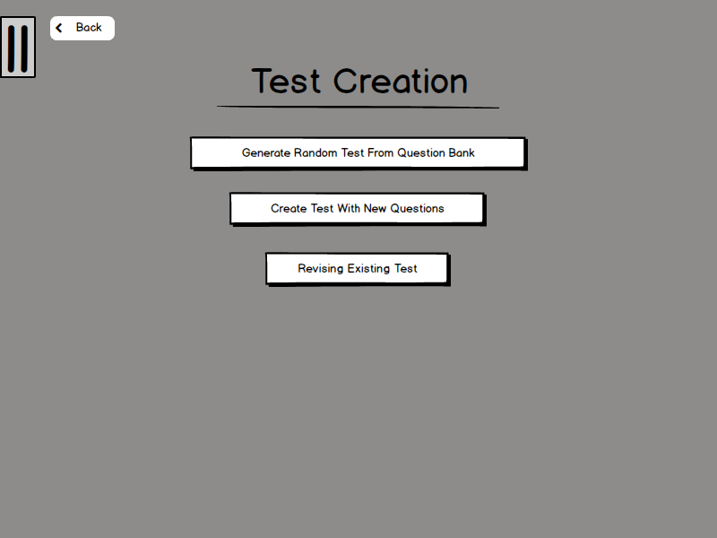

This section goes over how to create questions for tests and how to create a test randomly from a question bank. The User can generate a test by selecting:
'Generate Random Test From Question Bank'
'Create a Test With New Questions'
'Revise Existing Test'
The User can also change the test settings by selecting:
'Test Settings'
The figure below is the main page:

Figure 2-1: Main Test Creation Menu.
Details of system use are presented in the following scenarios: